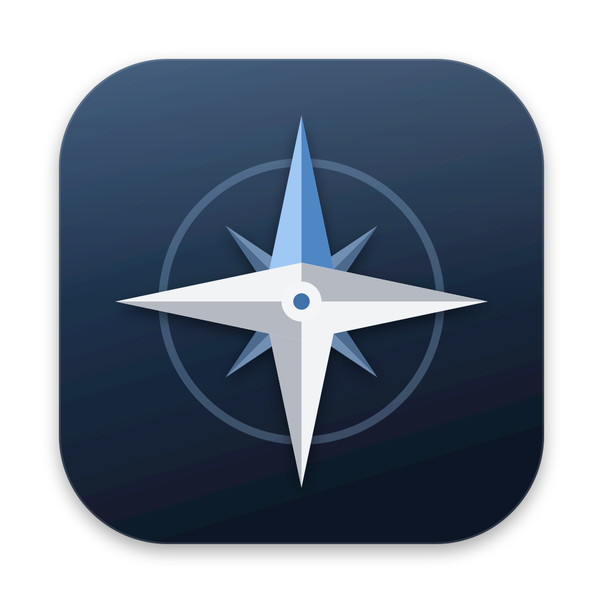
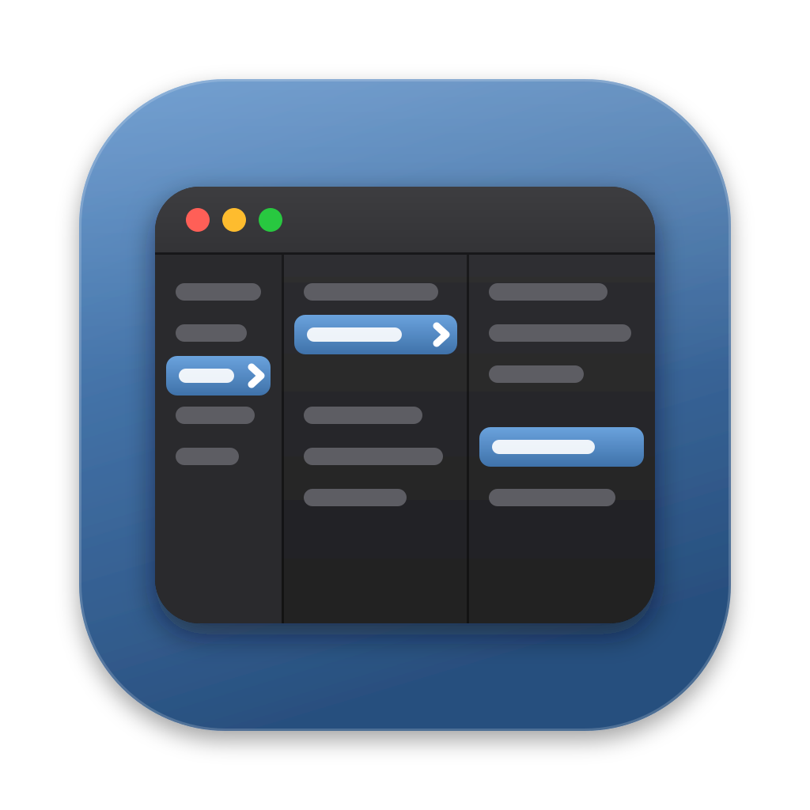

Eight directions on the macOS Big Sur+ grid (1024 canvas, 824 rounded-square body, 100 px margin, soft drop shadow). Each is shown at 512, 128, 64 and 32 px on light and dark backgrounds. Colors are taken from the Native chrome: graphite #202022–#3a3a3e, accent #6296cf → #3f72aa, highlight #9fc8f4.
.icns: render PNGs at 16, 32, 64, 128, 256, 512, 1024 (e.g. rsvg-convert -w N icon-X.svg) into Rile.iconset/ with the icon_NxN.png / icon_NxN@2x.png names, then run iconutil -c icns Rile.iconset.
